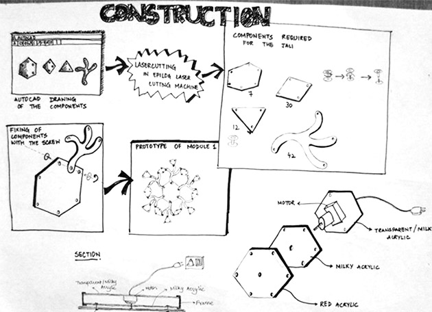
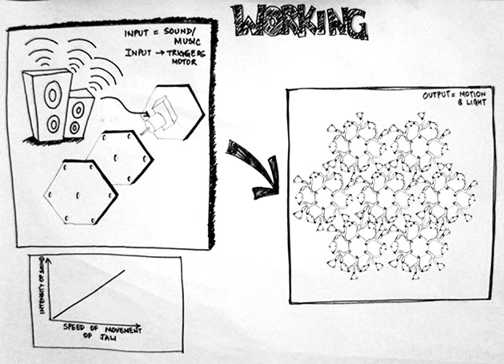
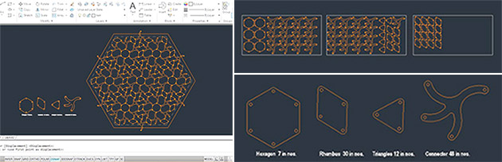
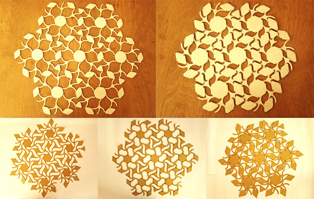
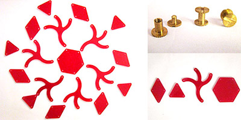
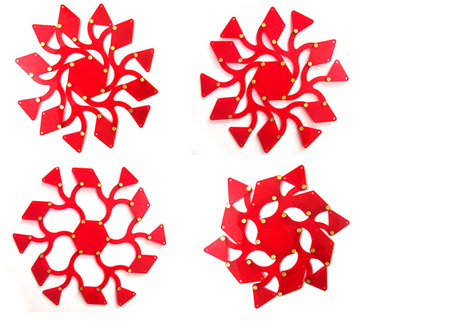
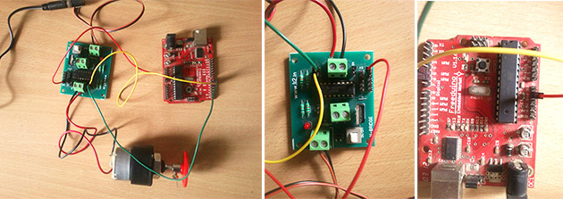
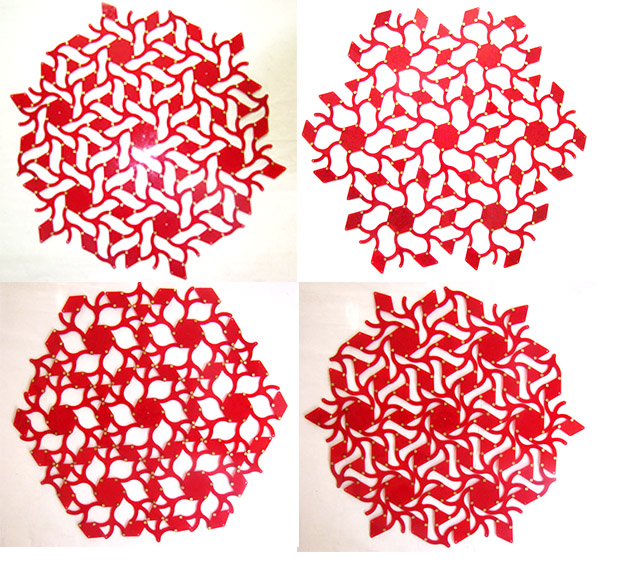

the musical facade
Overview
Prototype of a musical facade that coordinates its motion to the music being played
Description
The final project of 'How to Make (Almost) Everything' was a dynamic arduino based musical facade which syncs it's motion to the music being played in the laptop. I did the story boarding about the construction and working after various brainstorming sessions with the team. We started with paper and mdf protoyptes and after an iterative process zeroed in on acrylic sheet.
AutoCAD was used to make the digital skeleton and the pieces were then lasercut. Each module rotated about the centre piece which was connected to a motor controlled by the music being played. This was implemented by a fourier transform analysis on audio data using minim library in processing.
Collaborators
Urvi Sheth, Ashris Choudhary
Fablab, Centre for Environmental Planning and Technology, Ahmedabad, 2015
The initial idea of the project is inspired from the works of Akira Nishihara which consist of transformable tiles, kinetic structures etc. The idea of making something dynamic, aesthetic and interactive is a perfect exapmle of the combination of design and technology
I did the story boarding for the conceptualization and working of the musical facade after various brainstorming sessions.
We used AutoCad to draft the initial skeleton and know the exact measure and number of smaller parts that we would require.
Our initial prototypes were made of cardboard and mdf to see if the mechanism was right. The mechanism did work however the transition wasn't smooth.
Acrylic was used as the main material for the project as it has a relatively smoother texture and hence allows a smoother motion of the pieces.It can be cut using the Laser cutting machine easily and also the translucent nature of the material lets a brilliant effect to be created when light passes through it. Machine screws(california screws/album screws) were used to rivet together various pieces of the installation.
The basic module of the interactive musical facade. Each prototype consisted of 1 hexagon, 5 triangles, 6 rhombi and 6 floral pattern figures. All these figures were joined with 24 rivets.
For the electronics part we used Arduino Duemilanove (Freeduino); L293D Motor Driver (H-bridge PCB); 150 RPM, 12 V DC Motor and Arduino IDE 1.0.5 software.
Finally we joined seven modules to form the final assemble which changed configurations based on the rotation of the centre hexagonal piece.
However we soon realised that the above assembly and electronics is only capable of moving one module hence we decided to work with only one module for a working prototype. Also we provided a milky acrylic sheet for support. Finally fft analysis on audio data using minim library in processing was done to .